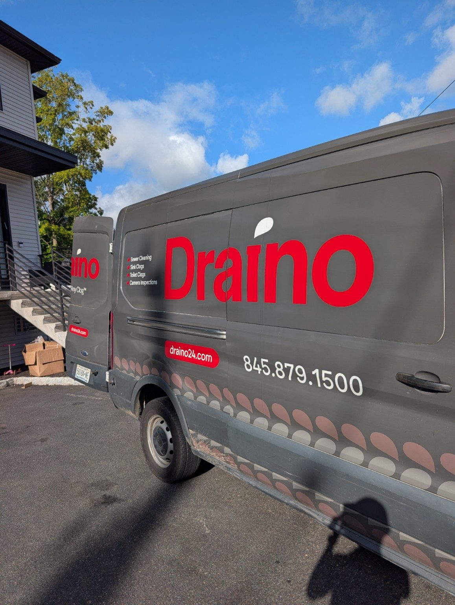
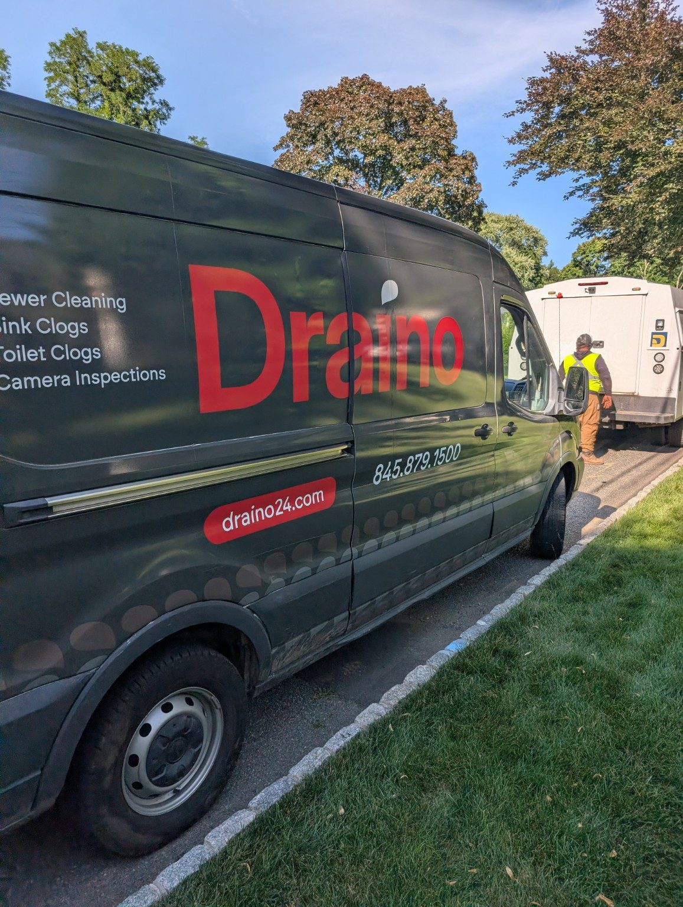

Commercial Sewer & Drain Service
Responsive sewer and drain service for property managers, apartment buildings, restaurants, stores, schools, houses of worship and other facilities.
A service partner for properties that cannot stay backed up.
Commercial drainage problems disrupt tenants, customers and staff. Draino provides main-line cleaning, hydro jetting, camera inspection, outside-drain service and preventive maintenance.

Built around the problem—not a generic package.
Every property and line is different. We use the symptoms, access and pipe condition to choose the right approach.
Apartment buildings
Main-line and branch-line backups affecting tenants and common areas.
Restaurants and kitchens
Grease, food waste and recurring line restrictions.
Retail and offices
Restroom, sink and main-sewer problems that interrupt operations.
Schools and facilities
High-use fixtures and scheduled preventive cleaning.
Property management
Clear communication, job documentation and multi-property service.
Outside drainage
Parking-lot, courtyard, driveway and area drains on private property.
Organized from arrival to final flow test.
Discuss the property
We review the affected area, access and urgency.
Dispatch appropriately
The right equipment is selected for the reported problem.
Perform the service
We clear, jet or inspect the line as needed.
Document next steps
We explain findings and discuss preventive or corrective options.
One call for sewer, drain and inspection work.
Draino helps local property managers and businesses reduce downtime with responsive service and practical communication.

What property owners ask us.
Call us when the symptoms do not fit neatly into one category. We can help determine the correct service.
Do you work with property-management companies?
Yes. We provide service for managed residential and commercial properties.
Can you provide preventive maintenance?
Yes. Cleaning frequency can be based on line history, use, grease exposure and past backups.
Do you provide camera inspections and locating?
Yes, when access and conditions allow.
Do you serve restaurants and apartment buildings?
Yes. We serve a range of commercial and multifamily properties throughout Rockland County.
Call Draino Sewer.
Tell us what is backing up, where it is happening and how long it has been going on.
On the job across Rockland County.
 Indoor drain work
Indoor drain work Exterior drainage
Exterior drainage Kitchen lines
Kitchen lines Main-line access
Main-line access